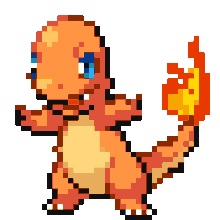

DRATINI
$500
Su nombre proviene de las palabras en inglés dragon (dragón) y tiny (pequeñito). A pesar de esto, por lo que se podría pensar que es un dragón pequeño, Dratini puede alcanzar hasta 1,8 de metros de longitud.
COMPRAR
CYNDAQUIL
$350
Cyndaquil es un Pokémon tímido y pequeño; que recuerda a un equidna. Su piel es azulada en la parte superior de su cuerpo, pero un color crema en la parte inferior.
COMPRAR
PIKACHU
$400

Pikachu almacena una gran cantidad de electricidad en sus mejillas. Estas parecen cargarse eléctricamente durante la noche mientras duerme.
COMPRAR
CHARMANDER
$650
Charmander es un pequeño lagarto bípedo. Sus características de fuego son resaltadas por su color de piel anaranjado y su cola con la punta envuelta en llamas.
COMPRAR